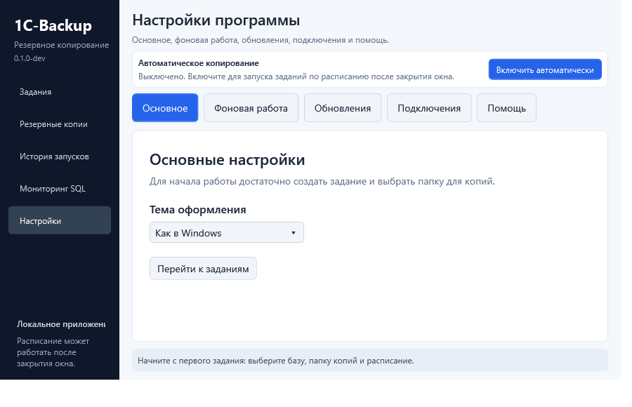

SP Backup: с установки до первой проверенной копии
Начните с разделов 1–4. Для обычной папки не нужны сервер мониторинга, база данных, токены или настройка шлюза. Оставшиеся разделы открывайте по своей задаче.
На пустом экране заданий кнопка Первая копия: инструкция с примером открывает упражнение из раздела 2. В мастере кнопка Помощь на этом шаге открывает нужный раздел: выбранный источник, хранилище, расписание или проверку восстановления. Окно задания остаётся открытым, введённые значения сохраняются в нём. Вернитесь в программу через панель задач Windows, чтобы продолжить. Эти кнопки доступны начиная с alpha.25.
Руководство описывает разделы «Настроек» в alpha.25. В alpha.24 настройки расположены на одной длинной странице: найдите на ней блок с тем же названием. Например, диагностика находится в «О программе» / «Диагностика», а не на отдельной странице «Помощь».
1. Скачать и установить программу
- Откройте список выпусков SP Backup.
- Найдите выпуск SP Backup для Windows x64. Не выбирайте Server или Storage: это другие компоненты, для первой копии они не нужны.
- В списке Assets скачайте файл, название которого заканчивается на windows-x64-setup.exe. Например: 1C-Backup-0.2.0-alpha.25-windows-x64-setup.exe. Номер версии может отличаться. Файлы .sha256 и Source code не являются установщиками.
- Откройте папку «Загрузки» и дважды нажмите скачанный файл. В запросе Windows на установку выберите «Да». Если Windows требует пароль администратора, понадобится пользователь, которому разрешена установка программ на этом компьютере.
- Пройдите шаги установщика, оставив предложенную папку программы. Отдельно устанавливать .NET не нужно.
- Откройте меню «Пуск», найдите SP Backup и запустите программу обычным щелчком.
Проверьте: слева видны разделы «Задания», «Резервные копии», «История запусков» и «Настройки». Если открылась веб-страница сервера, выбран другой компонент: для этого руководства нужна программа Windows.
Переносной ZIP — дополнительный вариант. Его нужно сначала полностью распаковать и запускать SPBackup.Desktop.exe из распакованной папки. Один EXE без остальных файлов не работает. Для установки службы используйте setup.exe.
2. Сделать первую копию на безопасном примере
Сначала потренируйтесь на одной папке с ненужным тестовым файлом. Это позволит проверить работу без риска для рабочей базы.
- Нажмите правой кнопкой на пустом месте рабочего стола, выберите Создать → Папку, назовите её Тестовые данные и нажмите Enter. Откройте папку двойным щелчком. На пустом месте выберите Создать → Текстовый документ, откройте его, напишите Проверка копирования, нажмите Ctrl + S и закройте редактор.
- Рядом на рабочем столе создайте другую папку — Тестовые копии. Папка для копий должна находиться вне папки с исходными данными.
- В программе откройте Задания и нажмите + Новое задание. При первом запуске можно нажать Создать первое задание.
- В названии укажите Проверка документов. В типе источника выберите Файлы и папки.
- Нажмите кнопку выбора папки рядом с источником и выберите созданную папку Тестовые данные. Оставьте способ Полная — все файлы. Нажмите Далее.
- На шаге хранилища выберите Локальный диск и укажите папку Тестовые копии. Если такого диска или папки нет в списке, сначала создайте папку в Проводнике. Временную папку пока оставьте пустой: программа использует стандартную.
- На шаге расписания выберите Только вручную. Число сохраняемых копий пока оставьте предложенным. На следующем экране проверьте название, источник и папку копий, затем нажмите Сохранить задание.
- Выберите созданную строку в списке и нажмите Создать копию. Дождитесь завершения. Если уже копируется другое задание, новый ручной запуск подождёт в очереди.
Если вы изменили задание и нажали Отмена, Esc или Выйти полностью, программа предложит Сохранить, Не сохранять или Вернуться. Сохранение проверяет все шаги; при ошибке мастер останется открытым и покажет, что исправить. Оно не запускает копирование. Закрытие окна крестиком обычно сворачивает программу в трей: введённые настройки остаются в редакторе, но ещё не сохранены. Эта защита доступна начиная с alpha.25.
Проверьте: в «Истории запусков» появился завершённый запуск без ошибки. В «Резервных копиях» есть новый архив, а кнопка «Последняя копия» открывает сведения о нём.
Две папки на рабочем столе подходят для упражнения. Для настоящих данных выберите другой физический диск, внешний накопитель, сетевую папку или настроенное удалённое хранилище: поломка одного диска не должна уничтожить и источник, и все его копии.
3. Убедиться, что копия действительно восстанавливается
Наличие ZIP в папке ещё не означает, что вы проверили восстановление.
- Если включено автоматическое копирование, дождитесь завершения текущей операции и нажмите Остановить в верхней панели. Не закрывайте программу.
- Откройте Резервные копии. Если копий много, выберите задание Проверка документов в фильтре.
- Выберите созданную копию. Нажмите Проверить целостность и дождитесь результата.
- Нажмите Восстановить файлы…. В Проводнике заранее создайте пустую папку Проверка восстановления, затем выберите её в диалоге программы.
- Программа создаст внутри неё новую папку. Откройте восстановленный текстовый документ: в нём должна быть фраза Проверка копирования.
Проверьте: восстановленная папка содержит ваш файл с правильным текстом. Исходная папка при этом не изменена. После такой проверки можно создать отдельное задание для настоящих документов.
Для инкрементной копии программа сама проверяет и применяет нужную цепочку. Не удаляйте вручную её полную основу или промежуточные архивы. Если архив зашифрован, потребуется его пароль; обычный Проводник может не поддерживать такой ZIP.
4. Настроить ежедневное копирование
- В «Заданиях» выберите нужное задание и нажмите Изменить.
- Пройдите шаги источника и хранилища, ничего не меняя, до шага расписания.
- Выберите Ежедневно, задайте время, например 21:00, и включите расписание задания. Время соответствует часам Windows на этом компьютере.
- Проверьте итог и сохраните задание. Посмотрите указанный следующий запуск: день и час должны соответствовать вашему намерению.
- В верхней панели нажмите Включить автоматически. Дождитесь сообщения, что фоновая работа включена.
- Теперь окно можно закрыть: агент продолжит работать. Компьютер должен оставаться включённым и не спать; внешний диск или сеть должны быть доступны к назначенному времени.
Проверьте после выбранного времени: в «Истории запусков» появился новый результат, а в «Резервных копиях» — новая копия. Если время ещё не наступило, можно отдельно нажать «Создать копию»: ручной запуск остаётся доступен при работающем расписании.
Две разные настройки отвечают за разные вещи: расписание задания задаёт время, а Включить автоматически запускает исполнителя, который его выполняет. Одного сохранённого времени недостаточно.
В верхней карточке видно, кто сейчас выполняет расписание: служба Windows, фоновый агент или сама программа. Разовая ручная копия не означает, что расписание включено. Если состояние исполнителя ещё не подтверждено или служба остановлена, карточка сообщает об этом.
Строка под состоянием показывает ближайший запуск по сохранённому расписанию в местном времени компьютера. Задания «При запуске системы» показываются отдельно, без выдуманного времени. Наличие времени в плане не означает, что агент включён или источник доступен: сначала проверьте состояние над строкой. Для выполнения компьютер должен быть включён и не спать.
После обновления с исправлением запуска при загрузке Windows: включённые задания «При запуске системы» получают новую отметку текущей загрузки и могут один раз выполниться при первом включении обновлённого исполнителя. Затем перезапуск службы, смена её пользователя и повторное открытие окна не создают ещё одну стартовую копию за ту же загрузку. История и прежние архивы сохраняются.
У фонового агента отдельно видно, включён ли автозапуск этой копии программы при входе в Windows. Без него после перезагрузки включите агент снова. Для работы до входа пользователя нужна служба из следующего раздела. Сворачивание в трей сохраняет работу планировщика программы; «Выйти полностью» останавливает его. Чужая запись автозапуска от другой переносной копии не считается автозапуском текущей программы и не удаляется при отключении здесь.
5. Запускать агент после входа в Windows или без входа
Если вы обычно входите в Windows перед работой:
- Откройте Настройки → Фоновая работа.
- Включите Запускать агент при входе в Windows.
- Нажмите Сохранить автозапуск. Эта настройка действует при следующем входе. Для работы прямо сейчас также включите автоматическое копирование в верхней панели.
- После следующего входа откройте программу и убедитесь, что фоновая работа включена. Не выбирайте «Выйти полностью», если хотите оставить агент работающим.
Если копии должны делаться после перезагрузки, пока никто не вошёл в Windows:
- Установите программу через setup.exe: переносной ZIP не регистрирует службу.
- В верхней панели остановите работающий агент и дождитесь завершения операций.
- Откройте Настройки → Фоновая работа → Установить или настроить службу.
- Выберите пользователя Windows, которому доступны ваши файлы и папка копий. Для первого локального задания обычно удобен пользователь, под которым вы уже проверили ручную копию.
- Введите пароль Windows, а не PIN-код входа. Пользователя без нужного пароля или без прав на данные недостаточно выбрать из списка.
- Нажмите Установить службу… и подтвердите запрос администратора. Дождитесь результата; если служба установлена, но остановлена, нажмите Запустить.
- Проверьте статус службы, включённое расписание заданий и следующий запуск. После выполнения проверьте историю.
Для сетевых папок службе нужен путь вида \\SERVER\Backups, а не подключённая буква Z:. Учётная запись службы должна иметь доступ к этой папке. Подробнее о подготовке доступа и смене пользователя: служба Windows.
6. Делать полную копию раз в неделю, а между ними — только изменения
Это подходит для Файлов и папок и WebDAV. Восстановление изменений требует полную основу и последующие архивы.
- Откройте задание через Изменить.
- На шаге источника выберите Инкрементная — только изменения.
- В Когда делать полную копию выберите день, например Воскресенье.
- В расписании оставьте ежедневный запуск, например в 21:00, и сохраните задание.
Пример: первый запуск во вторник создаст полную копию сразу. Затем каждый день сохраняются изменения. В воскресенье при первом запуске будет новая полная. Если в воскресенье компьютер был выключен, при ближайшем запуске, например в понедельник, создастся полная; затем снова идут изменения. Повторные запуски в тот же день не создают ещё одну полную.
Выбор дня определяет тип копии при запуске, но сам не добавляет время в расписание. Чтобы копирование происходило каждый день, нужно ежедневное расписание и работающий агент.
После сбоя или перезагрузки: если архив уже доставлен и зарегистрирован, но локальный индекс не успел сохраниться, программа попробует восстановить его из архивов в хранилищах задания, в том числе удалённых. Она сверит размер, SHA-256, манифест и связи всей нужной цепочки. При целой цепочке следующая копия останется инкрементной; день полной копии и число архивов в плане сохраняются. Проверка больших архивов может занять время — в прогрессе будет этап проверки.
Одно хранилище было недоступно: доступные назначения продолжают получать копии. Когда недоступное назначение вернётся, перед новым инкрементом программа доставит в него недостающую полную основу и промежуточные архивы из другого хранилища этого задания. Эти архивы проверяются; их исходные даты сохраняются, поэтому день следующей полной копии не сдвигается. В результате появится пояснение о доставленных предшествующих архивах. Это может занять больше времени и места, чем обычный инкремент.
Временная ошибка записи индекса не требует вручную удалять профиль. Если индекс снова не удастся записать, результат покажет предупреждение, а следующий запуск снова попробует прочитать проверенные архивы. Если основа отсутствует, повреждена или недоступна во всех хранилищах, запуск завершится ошибкой с пояснением. Программа не заменяет ошибочный инкремент внеплановой полной копией. Восстановите доступ к архивам и каталогу, затем повторите запуск. Если цепочка утрачена безвозвратно, явно выберите Полная в параметрах задания и создайте новую основу. После её успешного создания верните Инкрементная — только изменения и проверьте выбранный день полной копии или счётчик архивов. Прежние файлы вручную не удаляйте.
Для старого режима выберите По числу архивов. Например, 7 — полная основа и до 6 инкрементных архивов, затем новая полная. В календарном режиме это число не задаёт период; остаётся защитный предел цепочки в 365 архивов.
7. Создать задание для файловой базы 1С
Файловая база обычно находится в папке с файлом 1Cv8.1CD. Если вы подключаетесь к базе на сервере 1С и такой папки нет, не выбирайте папку программы 1С: сначала нужно узнать, используется MS SQL или PostgreSQL.
- Создайте новое задание и выберите Файловая 1С.
- Выберите базу из списка или укажите её папку вручную. Пример папки: D:\Базы\Бухгалтерия. Это папка данных, не папка установки платформы 1С.
- Для первого понятного сценария выберите способ Архив базы (ZIP) — он сохраняет файл 1Cv8.1CD. Перед запуском все пользователи должны закрыть эту базу. Программа проверит возможность эксклюзивного доступа.
- Выберите отдельную папку для копий, задайте расписание или «Только вручную», проверьте итог и сохраните.
- Закрыв базу у всех пользователей, выполните первую ручную копию и проверьте результат.
- В «Резервных копиях» выберите архив и используйте действие извлечения 1Cv8.1CD в новую папку. Исходная рабочая база не заменяется. Добавьте восстановленную папку в список баз 1С и отдельно проверьте вход и нужные документы.
Второй способ — выгрузка .dt через установленную платформу 1С. Для неё нужны платформа, доступ к базе и возможность входа в Конфигуратор; одного пути к папке недостаточно. Для DT используется пользователь информационной базы 1С; вход Windows отключён. В разделе платформы нажмите Пользователь и пароль 1С…, введите имя пользователя из списка входа в эту базу и его пароль, затем нажмите Сохранить учётные данные. Пользователю нужно право выгрузки базы. Если в базе вообще не заведены пользователи, сохранять данные входа не требуется. Пароль Windows, PIN-код и пароль NAS здесь не подходят. Пароль хранится в Windows, а не в файле задания. После смены базы или импорта задания сохраните его заново. Проверка источника подтверждает доступность сохранённых данных исполнителю; правильность входа проверяется при настоящей выгрузке. Проверку восстановления .dt выполняют средствами 1С в отдельную тестовую базу.
Если копия не начинается из-за занятой базы, сначала закройте пользовательские сеансы. Разрешение копировать открытую базу не делает её согласованным снимком.
Если включено Разрешить копирование открытой базы, программа всё равно сначала пытается копировать её с эксклюзивным доступом. Если база закрыта, успешная копия не получает предупреждение только из-за этой галочки. Предупреждение о риске появляется в результате, когда для чтения действительно понадобился совместный доступ. Проверка ZIP не подтверждает целостность работающей базы.
Чтобы перенести настройки на другую базу или папку, выберите существующее задание и нажмите На основе…. Выберите новую базу 1С из списка или другую папку: название нового задания подставится по выбранному источнику. При ручном выборе файла 1Cv8.1CD используется имя его папки. Вы можете задать своё название — дальнейший выбор источника его не затрёт. Проверьте хранилище и расписание; автоматические запуски нового задания первоначально выключены.
8. Использовать внешний диск или сетевую папку
На шаге Хранилище указывается место для готовых копий. Исходные данные остаются в папке, выбранной на предыдущем шаге. Для первой проверки используйте Локальный диск и отдельную пустую папку вне исходной. Кнопка Выбрать… открывает выбор папки; временную папку можно оставить пустой. Затем нажмите Далее. После сохранения задания выполните Проверить хранилища и Создать копию.
Внешний диск: подключите его, откройте в Проводнике и создайте папку для копий. В задании выберите Локальный диск, затем эту папку. Проверьте, что диск подключён и его буква не изменилась перед следующим запуском.
Сетевая папка:
В пакете, разрабатываемом после alpha.29, для NAS добавлен отдельный сетевой логин. В опубликованной alpha.29 этих полей ещё нет.
- Узнайте имя компьютера/сервера и имя общей папки. Пример полного пути: \\SERVER\Backups\Бухгалтерия. Замените SERVER и Backups на свои значения, а не копируйте пример буквально.
- Нажмите Win + R, вставьте путь и нажмите Enter. Должна открыться папка. Если Windows спрашивает пароль, используйте предоставленные вам сетевые учётные данные.
- Создайте в этой папке тестовый текстовый файл, откройте и удалите его. Если это не удаётся, сначала нужно исправить сетевой доступ; настройка копирования сама не выдаёт права на папку.
- В задании выберите Сетевая папка (UNC) и укажите этот путь.
- Сохраните, выберите задание и нажмите Проверить хранилища, затем создайте ручную копию.
- Если работает служба, доступ нужно проверить для пользователя службы, а не только для вошедшего пользователя Windows.
На время недоступности сети копия может завершиться ошибкой доставки. Смотрите результат каждого хранилища, а не только наличие временного файла на компьютере.
Проверить доступ службы к папке, не останавливая расписание:
- Убедитесь, что вверху окна показан работающий фоновый агент или служба. Если агент обновляли, перезапустите его вместе с окном программы.
- Выберите сохранённое задание и нажмите Проверить хранилища. Работающий исполнитель выполнит проверку под своей учётной записью. Копия базы не создаётся; расписание продолжает работать.
- Раскройте результат. Пометка (агент) означает проверку через исполнителя, (окно) — из окна программы. В подробностях указан пользователь, который выполнял запись, чтение и удаление тестового файла. Права, сетевые подключения и квоты разных пользователей могут отличаться.
- При ошибке запишите пользователя из результата и полный путь хранилища. Для сетевой папки нужен UNC-путь, например
\\server\share\backups. Доступ из Проводника вашей учётной записи не подтверждает доступ пользователя службы. - На компьютере или сервере, где находится папка, этому пользователю нужны разрешения в двух местах: в настройках общего сетевого доступа и в правах самой папки. В Windows это разделы свойств папки Доступ и Безопасность. Попросите администратора проверить оба раздела для указанного пользователя. Для NAS названия разделов могут отличаться.
- Пользователь службы должен иметь возможность читать, создавать, переименовывать и удалять свои файлы копий в выбранной папке. Права только на чтение позволяют открыть папку, но не сохранить архив. Явный запрет доступа тоже должен проверить администратор.
- После исправления снова нажмите Проверить хранилища и убедитесь, что результат успешен именно от пользователя службы. Затем выполните Создать копию, проверьте её результат и попробуйте восстановить файл в новую папку. Успешный тест доступа сам по себе ещё не подтверждает полноценную резервную копию.
- Кнопка отмены прекращает ожидание и передаёт запрос исполнителю. Он может ещё убирать свои тестовые файлы. Если связь потеряна или исполнитель перезапущен, результат не подтверждён: восстановите связь и повторите проверку.
Если исполнитель не запущен, проверка выполняется из окна программы; это явно указано в результате. Старые версии агента не поддерживают удалённую проверку: обновите и перезапустите агент/службу. Проверка доступа к хранилищам не заменяет пробную копию и восстановление файла.
Если во время доставки готового архива возникнет кратковременная сетевая ошибка, программа сделает две повторные попытки: после пауз 2 и 5 секунд. В прогрессе появится Повтор подключения к хранилищу. Исходная база/папка заново не копируется; повторяется перенос готового архива только в проблемное хранилище. Остальные хранилища продолжают получать свои копии. После каждой попытки полученный архив проверяется по размеру и SHA-256. При отмене ожидание прекращается.
Если сеть не восстановилась, откройте История → выберите запуск → Результат и прочитайте причину по каждому хранилищу. При частичной доставке уже сохранённые копии остаются, а рабочая папка задания сохраняется. Обычная кнопка Создать копию запускает новое задание копирования, поэтому сначала проверьте результат предыдущего запуска.
Ошибки прав, входа в Windows-хранилище, нехватки места и повреждения архива не устраняются повторами. Проверьте пользователя службы и его доступ к UNC-папке; при конфликте сетевых учётных данных обратитесь к администратору файлового сервера. Пароли в пути к папке не вводятся. Если не удалось убрать временный файл доставки, причина фиксируется в диагностике; такие .tmp не являются зарегистрированными резервными копиями. Готовые архивы и зависимости цепочки вручную не удаляйте.
Если вам выдали подключение к Linux-шлюзу, используйте руководство шлюза хранилища. Для FTP/FTPS заранее получите адрес сервера, порт, логин, пароль и папку хранения у владельца хранилища; в мастере выберите FTP, заполните выданные параметры и нажмите Настроить логин и пароль. Не используйте данные от сервера мониторинга: это отдельное подключение. После настройки проверьте хранилище вручную.
### NAS требует отдельный логин, а Проводник уже открывает папку
Служба и Проводник используют разные сеансы Windows. Сохранённый в Проводнике вход сам по себе не подключает NAS для службы. Код 1326 означает, что файловый сервер отклонил имя пользователя или пароль.
В новой сборке после alpha.34 доступ FTP, сетевой логин и пароль архива можно задавать при работающем агенте или службе. Новый пароль сохраняется отдельным черновиком в Windows. После сохранения задания актуальная служба подтверждает применение настроек без перезапуска. Уже выполняющаяся копия заканчивается с прежними параметрами; последующие запуски используют новые. При несовпадении версий установите программу и службу из одного нового установщика. Задания с сервера изменяет администратор в панели сервера.
Новые ZIP-копии файловой 1С называются, например, УНФ_2026-11-11_17-36-47.zip. При совпадении времени добавляется (2). Внутри ZIP сохраняется исходное имя 1Cv8.1CD. Прежние копии доступны через сохранённый каталог.
- Остановите автоматическое копирование/службу и дождитесь завершения текущих операций. Откройте проблемное задание → Хранилище. Для дополнительной папки нажмите её изменение в списке дополнительных хранилищ.
- Выберите Сетевая папка (UNC) и задайте
\\NAS\Backups\Бухгалтерия, подставив свой адрес и общую папку. Используйте то же имя сервера или IP, которое доступно на этом компьютере. - Отметьте Отдельный логин и пароль NAS / сетевой папки, затем нажмите Задать сетевой логин и пароль…. Введите пользователя, которому на NAS разрешена запись в эту общую папку, и его пароль. Для Windows-сервера можно указать
СЕРВЕР\пользовательили доменную учётную запись. Это не PIN входа в Windows и не обязательно пароль пользователя службы. - Сохраните доступ, затем само задание до конца мастера. Пароль остаётся в Windows; перед публикацией задания подготавливается защищённая копия для установленной службы. Закрытие несохранённого черновика не подключает к нему службу.
- Запустите службу. Выберите задание → Проверить хранилища. При работающей службе тест идёт через неё: создаёт, читает и удаляет только свой временный файл. В отчёте пользователь Windows — это процесс службы; дополнительный сетевой вход применяется отдельно к выбранному хранилищу.
- После успешной проверки выполните Создать копию. Проверьте результат каждого хранилища и восстановление файла. Неверный сетевой пароль даёт ошибку: программа не переключается молча на другого пользователя.
Для разных общих папок можно задать разные сетевые учётные данные. При смене сервера/общей папки задайте доступ заново; внутри той же общей папки подпапку можно менять без нового пароля. Импорт задания с другого компьютера всегда требует повторного ввода сетевого доступа. Старые SMB-подключения Windows программа не отключает.
Задания с отдельным сетевым входом сохраняются отдельно от файла для прежних агентов. Используйте новую версию программы и службы: предыдущая alpha.29 не понимает эти защищённые настройки и может отказать в загрузке профиля; более ранние версии, не читающие файл защищённых заданий, их не исполняют. Обычные задания не получают пароль NAS. Подробности службы.
9. Подключить MS SQL или PostgreSQL
Эти задания копируют базу штатными средствами СУБД. Для первой настройки потребуются данные от человека, который обслуживает базу. Не нужно угадывать адрес, имя базы или путь на сервере.
Для MS SQL подготовьте:
- имя экземпляра, например SERVER\INSTANCE, и точное имя базы;
- папку для .bak на SQL-сервере, куда служба MS SQL может записать файл;
- путь, по которому компьютер с SP Backup читает эту же папку, например \\SERVER\SqlBackups;
- способ входа в MS SQL: учётную запись Windows или отдельные логин и пароль MS SQL. SQL-логин должен иметь права резервного копирования базы; файлы по сетевому пути всё равно читает пользователь Windows приложения или службы.
В новом задании выберите MS SQL, заполните источник (имя базы) и подготовленные поля подключения. В Способ входа на сервер выберите нужный вариант. Для Логин и пароль MS SQL нажмите Задать логин и пароль MS SQL…, заполните оба поля и нажмите Сохранить учётные данные. Сохранение пароля не проверяет подключение: оно проверяется после сохранения задания. Возможность доступна начиная с alpha.25; в alpha.24 используется только учётная запись Windows. Папка .bak на сервере и конечное хранилище SP Backup — разные места: сначала сервер создаёт .bak, затем агент читает его и доставляет копию в выбранное хранилище.
Примеры заполнения MS SQL
Адрес может выглядеть как SQL-SERVER, SQL-SERVER\SQLEXPRESS или 192.168.1.10,1433 (порт через запятую). Не добавляйте https://. localhost означает компьютер агента. Имя базы, например Accounting, должно точно совпадать с именем в MS SQL; название задания можете выбрать своё.
Если сервер и агент на одном компьютере, оба пути к папке копий могут быть D:\SqlBackups. Если на разных: MS SQL пишет в D:\SqlBackups, а агент читает ту же папку через \\SQL-SERVER\SqlBackups. Папку и сетевой доступ нужно подготовить заранее. SQL-логин не заменяет права Windows на сетевую папку.
В разделе Сертификат и защита подключения по умолчанию включена проверка сертификата. Для известного сервера с самоподписанным сертификатом можно включить Подключаться без проверки сертификата MS SQL, прочитать предупреждение и подтвердить выбор. Соединение остаётся зашифрованным, но подлинность сервера не проверяется. Выбор сохраняется для этого задания и применяется службой Windows. На последнем шаге мастера проверьте способ входа, состояние проверки сертификата и оба пути.
Для PostgreSQL подготовьте: адрес сервера, порт, имя базы, пользователя, совместимые pg_dump и pg_restore, а для проверки подключения — psql. Начиная с alpha.25 для обычного входа пароль можно задать прямо в программе, без ручного файла паролей.
На шаге PostgreSQL нажмите Найти PostgreSQL на этом компьютере и дождитесь результата. При нескольких установленных версиях выберите ту, которая подходит серверу. Программа подставит оба пути из одной установки. Если утилиты не найдены, откройте Выбрать утилиты вручную или посмотреть пути и выберите pg_dump.exe и pg_restore.exe. Это программы на компьютере агента, даже если сама база на другом сервере. Поиск утилит доступен начиная с alpha.25.
Для PostgreSQL в Как подключаться оставьте Пароль, сохранённый в программе. Заполните сервер, порт, пользователя и имя базы — их сообщает администратор базы. Затем нажмите Задать пароль PostgreSQL…, введите пароль выбранного пользователя и сохраните его. В файле задания будет только ссылка; сам пароль хранится в Windows. При смене сервера, порта или пользователя задайте пароль заново. После импорта на другой компьютер пароль тоже нужно ввести заново. Эта возможность доступна начиная с alpha.25. Для уже настроенного входа через сертификат, Windows или файл паролей выберите Настройки PostgreSQL на этом компьютере; прежние задания сохраняют этот вариант.
Совместимость версий PostgreSQL
Для обычной копии и восстановления на той же основной версии сервера выбирайте pg_dump и pg_restore из одного комплекта этой версии. Например, для PostgreSQL 17 — оба файла из папки PostgreSQL\17\bin. Версия pg_dump не должна быть старее сервера. Новая утилита может прочитать старый сервер, но её дамп не считается гарантированно пригодным для восстановления на старую версию PostgreSQL. Переход проверяйте в отдельной тестовой базе на подходящем сервере.
Если задание остановилось на pg_restore, проверьте оба пути: возможно, выбраны новый pg_dump и старый pg_restore из другой папки. После выбора правильного комплекта повторите копирование и тестовое восстановление. «Проверить источник» подтверждает вход через psql, но не заменяет проверку дампа.
Чтобы включить защищённое подключение PostgreSQL:
- Остановите автоматическое копирование и дождитесь завершения исполнителя. Это нужно при создании или изменении защищённого задания.
- Откройте задание → шаг источника → Защищённое подключение к PostgreSQL. Включите Проверять сертификат и имя сервера (TLS).
- Если администратор выдал открытый корневой сертификат PEM, нажмите Выбрать сертификат…. Это файл на компьютере исполнителя; пользователю службы нужен доступ на чтение. Пустое поле использует стандартное доверие PostgreSQL этого исполнителя.
- Укажите имя сервера, совпадающее с сертификатом. IP-адрес подходит, только если он включён в сертификат.
- Сохраните задание, включите исполнитель и нажмите Проверить источник. Затем создайте копию и проверьте восстановление в отдельную тестовую базу. Неверные сертификат или имя должны приводить к отказу подключения; отключать проверку ради устранения ошибки не следует.
Старые задания сохраняют прежнее поведение, пока вы явно не включили TLS. Защищённые задания хранятся отдельно: прежняя версия агента их не выполняет и не показывает; обычные задания продолжают работать. Для резервного копирования настроек сохраняйте весь профиль, а не только jobs.json. При экспорте одного задания путь к сертификату сохраняется, но сам сертификат и пароль не переносятся. После импорта проверьте путь, доступ службы и подключение.
После сохранения нажмите Проверить источник, затем Проверить хранилища, затем создайте первую ручную копию. Успешная проверка подключения не заменяет пробное восстановление. Автоматического восстановления рабочей SQL-базы через интерфейс пока нет: проверку восстановления проводят в отдельной тестовой базе средствами соответствующей СУБД.
Точные примеры полей, парольного файла и ограничений: настройка SQL-копий.
Если проверка базы завершилась ошибкой
В следующем пакете после alpha.25 известные ошибки MS SQL получают пояснение и действие на русском. Если вход отклонён, сверьте способ подключения и учётные данные; если пароль истёк, сначала измените его с администратором на сервере, затем сохраните новый в программе. Недостаток прав не исправляется повторным вводом пароля: администратор должен предоставить доступ к базе и нужной операции.
При ошибке сертификата передайте администратору показанную причину: имя сервера, доверие, срок или отзыв требуют разных действий. Проверьте часы компьютера при ошибке срока. Программа продолжает проверять сертификат.
Если не проходит PostgreSQL, сверьте сервер, порт, базу, пользователя и способ входа. Код выхода psql не говорит точно, ошибочен ли пароль. При необходимости сохраните пароль заново; проверку сертификатов согласуйте с администратором. После исправления сохраните задание и снова нажмите Проверить источник. Затем сделайте пробную копию и восстановление.
Если причина остаётся непонятной, запишите видимый код и сохраните диагностику по разделу 11. Не удаляйте предыдущие копии ради повторной проверки.
Если резервные копии уже делает другая программа
Откройте Задания → ▾ рядом с «+ Новое задание» → Наблюдение SQL. Задайте понятное название, выберите MS SQL или PostgreSQL и укажите имя базы, за копиями которой нужно наблюдать. Для MS SQL нужны экземпляр сервера и права чтения истории msdb; для PostgreSQL — папка JSON-отчётов скрипта. Нажмите Сохранить задание и закройте окно. Наблюдение появится в общем списке рядом с заданиями копирования.
Для контроля срока включите Предупреждать, если успешной копии нет больше и укажите число часов. Например, 26 — для ежедневной копии с запасом два часа. Период чтения истории MS SQL должен быть не меньше этого срока. После успешного опроса отсутствие свежей копии даёт предупреждение. До первого опроса и при ошибке чтения журнала наличие новой копии не подтверждается.
В подробностях наблюдения MS SQL отдельно показаны последние успешные полная, дифференциальная копии и копия журнала транзакций. «Не обнаружена» означает отсутствие данного типа в доступной истории; это само по себе не ошибка. Общий срок свежести учитывает любой успешный тип копии. Для проверки цепочки восстановления необходимо тестовое восстановление.
Выберите наблюдение и нажмите Проверить сейчас, если фоновый агент остановлен. Для постоянной работы включите автоматическую работу агента или установите службу. Результат открывает журнал выбранной базы, Изменить — параметры наблюдения, Выключить опрос — приостанавливает его. При подключённом сервере это же задание, состояние опроса и история будут видны в карточке агента; изменять параметры нужно в программе агента.
Копия обнаружена означает, что в журнале есть запись о завершённой внешней копии. Копии пока не обнаружены означает отсутствие записей, даже если подключение работает. Ошибка опроса требует проверки подключения и прав пользователя агента или службы. Эти наблюдения не создают новые копии и не проверяют восстановление: для этого нужен отдельный тест. MS SQL msdb содержит завершённые копии; ошибки сторонней программы, которые в msdb не записываются, нужно проверять в её собственном журнале. Подробные шаги: наблюдение за внешними SQL-копиями.
10. Узнать результат и разобраться с ошибкой
Откройте История запусков, выберите нужный запуск или используйте кнопку Результат у задания. Сверьте время, результат и каждое хранилище.
- Успешно без предупреждений: копия создана и проверена выбранным методом. Для уверенности всё равно периодически проверяйте восстановление.
- Есть предупреждения / неполная копия: архив может быть пригоден для восстановления доступных данных, но часть свежих файлов не попала в него. В результате перечислены пропуски. Найдите недоступные файлы и устраните причину; не удаляйте прежнюю цепочку.
- Частичная доставка: одна и та же копия могла попасть в одно хранилище и не попасть в другое. Откройте результаты назначений и проверьте каждое отдельно.
- Ошибка / отменено / прервано: не считайте запуск готовой копией. Откройте причину и проверьте, есть ли последняя подтверждённая копия.
Частые ситуации:
- Не запустилось по времени. Проверьте дату и часы Windows, включённое расписание задания, показанный следующий запуск и состояние автоматического копирования. Компьютер не должен спать. Для работы до входа пользователя нужна служба, а не только автозапуск при входе.
- Агент или служба аварийно завершились во время копирования. Запустите прежнего исполнителя: для службы откройте Настройки → Фоновая работа и нажмите Запустить, для фонового агента — Включить автоматически в верхней панели. Дождитесь готовности и откройте Историю запусков: незавершённый запуск будет отмечен Прервано. Выберите его, откройте Рабочую папку и проверьте последнюю подтверждённую копию в «Резервных копиях». Затем выберите задание и нажмите Создать копию, если нужен повтор сейчас. Прежняя ручная команда сама после перезапуска не повторяется; расписание продолжает действовать. Сохраняйте прежние архивы и всю инкрементную цепочку.
- Доступ запрещён. Откройте источник и папку копий в Проводнике и проверьте чтение/запись. При службе уточните её пользователя. Права вашей интерактивной учётной записи и пользователя службы могут отличаться.
- База 1С занята. Закройте базу у всех пользователей и повторите копирование. Не включайте разрешение открытой базы просто для устранения сообщения.
- Не проходит проверка хранилища. Раскройте результат и найдите строку Этап. «Подготовка и подключение» — проверьте путь, доступность сервера и данные входа. «Запись тестового файла» — права записи, квоту и свободное место. «Чтение и проверка» — права чтения и стабильность соединения. «Удаление тестового файла» — права удаления. Если очистка не завершилась, отчёт содержит путь тестового файла. Проверяйте только указанный файл, не удаляйте архивы резервных копий. В начале отчёта указана учётная запись исполнителя; доступ из Проводника другого пользователя не подтверждает доступ службы.
- Нет места. Выберите задание → Проверить хранилища → раскройте результат: панель прокрутится к отчёту. Для временной папки и доступных локальных/сетевых хранилищ показано свободное место для пользователя, который выполняет проверку. Прокрутите подробности, чтобы увидеть каждую папку. У службы права и квота могут отличаться: её запуск работает от выбранного пользователя службы. Для FTP и других удалённых хранилищ объём может быть неизвестен.
Перед переносом готового архива в локальную/сетевую папку программа сверяет его размер со свободным местом. При нехватке сообщение показывает, сколько нужно и сколько доступно; остальные хранилища продолжают проверяться и принимать свою копию. Прежние копии ради освобождения места заранее не удаляются. Откройте История → выберите запуск → Рабочая папка, затем освободите место или выберите другой диск и повторите запуск. Старые зависимые архивы не удаляйте вручную. Показанное место — снимок на момент проверки, а не резервирование. Размер будущего сжатого архива заранее неизвестен; временной папке тоже нужно место для подготовки файлов. Если объём определить не удалось, программа попробует обычную запись и проверку копии.
- Не виден внешний диск / сетевая папка. Сверьте букву диска, сетевое соединение и путь. Для службы используйте UNC вместо буквы подключённого сетевого диска.
- Создать копию временно недоступно. Дождитесь запуска агента или восстановления его очереди. Если команда уже принята, проверьте историю вместо повторного щелчка. Другое задание можно поставить в очередь, когда агент готов.
- Не получается восстановить файлы. Остановите агент, выберите нужную копию и проверьте наличие полной цепочки и пароля. Восстанавливайте в новую папку.
11. Передать понятную диагностику
- Запишите, что вы делали, какое задание выбрали и примерно во сколько возникла проблема. Укажите, работало ли окно, фоновый агент или служба.
- Откройте Настройки → Помощь и нажмите Сохранить диагностику…. В alpha.24 найдите эту кнопку на общей странице «Настройки».
- Выберите удобную папку, например рабочий стол, и сохраните ZIP. Если такой файл уже есть, выберите другое имя: он не перезаписывается.
- Передайте ZIP и описание проблемы тому, кто помогает с программой. Отправка выполняется вами вручную.
Архив содержит версию, сведения о системе, логи и сокращённые результаты. Пароли, исходные данные и сами копии в него не включаются. Кнопка Скопировать версию для поддержки помогает передать номер версии и коммит без перепечатывания.
В следующем пакете после alpha.29 в диагностику добавлен снимок выполнения: ближайшие запуски по сохранённому плану окна, состояние фонового агента, последний прогресс и ожидающие ручные команды. Вместо названий заданий используются их идентификаторы; пути, адреса и текст предупреждений не передаются. Укажите название проблемного задания отдельно. Снимок показывает время последнего обновления: старая запись не подтверждает, что агент сейчас работает. Рассчитанное ближайшее время — ориентир по плану, а не обещание немедленного запуска: предыдущее задание может ещё выполняться. Расписание «При запуске системы» не имеет фиксированного следующего времени.
12. Подключить общий мониторинг, если он действительно нужен
Для одной автономной программы этот шаг можно пропустить. Мониторинг нужен, чтобы видеть несколько компьютеров в общей веб-панели; файлы копий продолжают храниться в выбранных вами хранилищах.
- На отдельном компьютере установите SP Backup Server, а не ещё один агент. При установке имя — понятная подпись панели, например Бухгалтерия, а адрес — полный HTTPS-адрес подключения. Это разные поля.
- Откройте панель сервера и создайте приглашение на подключение компьютера.
- На компьютере с агентом откройте Настройки → Подключения → Подключить по приглашению….
- Перенесите из приглашения адрес сервера, одноразовый код и SHA-256 сертификата, затем подтвердите подключение.
- Создайте тестовую копию и проверьте, что компьютер и его результат появились в панели. Для отправки при закрытом окне оставьте работающим агент или службу.
Для общего мониторинга оставьте «Задания на этом компьютере». Для заданий администратора остановите агент, выберите «Задания с сервера» и нажмите «Применить режим», затем «Включить автоматически». Ключи вручную вводить не нужно. До получения заданий список пуст. Полученные задания можно запускать вручную независимо от расписания, а изменять — в панели сервера. Чтобы вернуть локальные задания, остановите агент и примените «Задания на этом компьютере»: задания и копии сохраняются. Пошаговая установка с подготовкой адреса, входом и приглашениями: первый запуск сервера Windows. Технические параметры: руководство сервера.
13. Обновить программу и сохранить настройки
- Закончите текущую копию. Если обновляетесь скачанным установщиком вручную, выберите Выйти полностью в меню значка возле часов и дождитесь остановки агента.
- Запустите новый setup.exe в ту же папку программы. Не удаляйте профиль, историю или папку с копиями.
- Откройте программу под тем же пользователем Windows, проверьте список заданий и состояние агента/службы.
- Для встроенного обновления откройте Настройки → Обновления → Проверить обновления и следуйте показанному действию. Встроенное обновление само выполняет остановку перед установкой; Windows запросит права администратора.
- После обновления проверьте следующий запуск и сделайте тестовую ручную копию. При переносном ZIP заменяется весь комплект файлов, а не один EXE.
14. Как найти нужную настройку

Пример нового экрана настроек. Номер сборки в вашем окне может отличаться.
- Основное: тема программы и переход к заданиям.
- Фоновая работа: запуск после входа, служба без входа и отдельный режим работы только при открытом окне.
- Обновления: поиск и установка новой версии; специальные параметры скрыты в дополнительном блоке.
- Подключения: подключение по приглашению и выбор локальных или серверных заданий. После выбора нажмите «Применить режим». Дополнительные параметры связи и шлюзов скрыты в отдельном блоке.
- Помощь: это руководство, диагностика, логи и версия программы.
Руководство установлено вместе с программой в Help/user-guide.html и открывается без интернета. Ссылки на загрузку и дополнительные документы требуют подключения к интернету.
15. Скопировать папку из WebDAV или Nextcloud
WebDAV — источник файлов на удалённом сервере. Это не адрес веб-страницы, на которой вы обычно просматриваете документы. Для настройки нужны конечный HTTPS-адрес папки WebDAV, логин и пароль приложения. Получите их у владельца облака. В Nextcloud адрес WebDAV обычно можно найти в настройках страницы «Файлы», а пароль приложения — в настройках безопасности учётной записи.
- Создайте новое задание, задайте понятное название и выберите источник Файлы WebDAV. Смотрите на поле HTTPS-адрес папки WebDAV.
- Вставьте выданный адрес полностью. Пример для Nextcloud: https://cloud.example/remote.php/dav/files/user/Documents/. Здесь cloud.example, user и Documents нужно заменить своими значениями. Адрес должен сразу вести к нужной папке, без перехода на другой адрес.
- Нажмите Логин и пароль…. Введите логин и пароль приложения, затем нажмите Сохранить учётные данные. После закрытия окна ожидайте надпись Учётные данные сохранены в Windows. Это ещё не проверка подключения к серверу.
- Для первой пробы оставьте Полная — все файлы, нажмите Далее и выберите Локальный диск с отдельной папкой для копий. Так проще проверить источник до подключения удалённого хранилища.
- На шаге расписания выберите Только вручную, проверьте итог и сохраните задание.
- Выберите его в списке, нажмите Проверить источник и дождитесь результата. Если есть ошибка входа, проверьте логин и пароль приложения. Если папка не найдена или сервер возвращает перенаправление, уточните конечный адрес WebDAV. Не заменяйте HTTPS на HTTP для обхода ошибки.
- После успешной проверки нажмите Создать копию. Затем выполните проверку целостности и пробное восстановление по разделу 3. Только после этого включайте расписание или инкрементный режим.
Проверьте: в восстановленной папке есть ожидаемые документы из облака. Файлы, доступ к которым не разрешён, не появятся сами собой: сначала исправьте права или адрес источника. Во время копирования по возможности не изменяйте эту папку на сервере — единый снимок всех файлов не создаётся.
### Первый запуск сохранённого задания: пять шагов
Выберите задание в списке и откройте Файл → Первый запуск задания…. Это отдельная прокручиваемая инструкция для выбранного типа источника; само её открытие ничего не запускает и не меняет.
- Сохраните задание. Для первой проверки удобно выбрать «Только вручную». Название задания — любое понятное вам имя. Для 1С выбирается папка с
1Cv8.1CD, для файлов — исходная папка или файл, для SQL — точное имя базы без пути и строки подключения. Адрес сервера задаётся отдельно. Для WebDAV нужен конечный HTTPS-адрес папки, а не страница облака. - Проверьте источник и хранилища. Если будет работать служба, сначала включите её в Настройки → Фоновая работа. Выполните обе проверки и прочитайте пользователя в отчётах. Для NAS укажите UNC-путь, например
\\NAS\Backups\Accounting; подключённый дискZ:может отсутствовать у службы. Отдельный логин хранилища относится к назначению, а не к сетевому источнику. Источник должен читаться пользователем исполнителя. - Создайте пробную копию. Нажмите «Создать копию» один раз. При работающей службе запрос передаётся ей. Дождитесь итогового состояния в истории; если есть предупреждения, прочитайте причины и пропуски. Пока запрос принят или выполняется, не повторяйте запуск.
- Найдите результат. Нажмите «Последняя копия», проверьте задание, дату и хранилище. Выполните «Проверить последние копии»; если требуется остановка исполнителя, сначала дождитесь завершения операций. Совпадение SHA-256 подтверждает целостность файла, но не восстановление базы.
- Проверьте восстановление. Файлы восстанавливайте в отдельную пустую папку; для инкремента нужна вся цепочка. Файловую базу 1С проверьте в отдельной тестовой базе. MS SQL/PostgreSQL восстанавливайте с администратором СУБД в другую тестовую базу с новым именем. Сравните данные. Рабочие данные не заменяйте. После успешного результата настройте расписание, включите автоматическое копирование и проверьте первый автоматический запуск в истории.
Подключение MS SQL с проверенным правом BACKUP DATABASE ещё не подтверждает права SQL-службы на папку .bak, сопоставление путей и восстановление. PostgreSQL SELECT 1 не проверяет чтение всех таблиц и совместимость pg_dump. Для PostgreSQL внешние настройки входа относятся к пользователю исполнителя; для обычного пароля используйте сохранение в программе. Параметры TLS и сертификат проверяются отдельно от сохранения пароля. Список WebDAV не подтверждает скачивание всех файлов — это проверяет пробная копия.
### Как читать результат предварительной проверки
В отчёте источника и хранилищ указаны пользователь исполнителя, начало, окончание и длительность проверки. При SQL-входе пользователь Windows относится к программе, а логин MS SQL указан отдельно в результате подключения. Для PostgreSQL отдельно показан пользователь из параметров подключения. Пояснение о способе входа показывает только логин, без пароля и полной строки подключения. Время показывается в местном часовом поясе компьютера. Если работающий старый агент не передал время, программа пишет об этом явно.
«Проверить источник» и «Проверить хранилища» при доступном работающем агенте передают проверку ему, без остановки расписания. В отчёте указана фактическая учётная запись исполнителя. Если агент остановлен, проверка выполняется из окна; её успех не подтверждает права службы. Старый агент без поддержки проверки источника нужно обновить и перезапустить: программа не подменяет его результат проверкой окна. Для проверки автоматического копирования создайте первую копию через нужного исполнителя и проверьте восстановление.
Отмена не подтверждает доступ ко всем данным: часть операций могла уже завершиться. Успех отдельного хранилища относится только к нему. Предварительная проверка не заменяет создание и тестовое восстановление копии.
Если кнопка проверки неактивна, наведите на неё указатель: подсказка объяснит причину и следующий шаг. Сначала выберите сохранённое задание; для наблюдения SQL используются «Проверить сейчас» и «Результат». Если открыт мастер, сохраните или закройте его. Источник и хранилища можно проверить через поддерживающего эти операции работающего агента. Проверка последних копий из окна требует остановленного исполнителя. Если расписание работает только в окне, остановите его перед проверкой источника или используйте службу.
Отчёт относится к настройкам задания на момент проверки. После их изменения он помечается как устаревший — выполните проверку повторно. Смена выбранного задания скрывает чужой отчёт. Проверка последних копий также показывает пользователя окна и время проверки; отмена не означает, что все копии проверены.
### Сохранить или передать отчёт проверки
Раскройте отчёт под списком заданий. Копировать отчёт переносит текст в буфер обмена, Сохранить отчёт… создаёт новый файл TXT в выбранной папке. В текст включены сведения о версии программы и отметка состояния отчёта. Перед отправкой проверьте пути и имя пользователя: это сведения из вашего компьютера. Уже существующие файлы не заменяются; выберите другое имя. Сохранение в рабочий профиль приложения не разрешено.
Во время проверки кнопки итогового отчёта недоступны. Над подробностями написано, выполняется ли проверка и изменились ли после неё настройки. Скрыть и очистить убирает только отчёт из окна — задания, историю, настройки и резервные копии эта кнопка не удаляет. Чтобы снова получить результат, запустите нужную проверку.
В итоговом отчёте указано, завершилась ли проверка успешно, с замечаниями, ошибкой или отменой. После отмены подробности раскрываются автоматически. Если отчёт от работающего агента не получен, окно показывает именно ошибку получения результата, а не утверждает, что источник или хранилище недоступны.
Повторить проверку запускает тот же тип проверки для выбранного задания: источник, хранилища или последние копии. Подсказка неактивной кнопки объясняет, что мешает повтору. Изменить задание открывает обычный мастер с текущими параметрами; после сохранения исправлений повторите проверку. Сведения предыдущей проверки не заменяют новый результат.
В проверке последних копий отдельно подсчитываются успешные результаты, отсутствующие копии, ошибки и отменённые назначения. Отсутствие результатов не считается успешной проверкой. Если проверка файлов прошла, но не удалось сохранить отметку проверки, итог помечается замечанием, а подробности сохраняются в отчёте.
### Принятые ручные запуски
Когда вы нажали «Создать копию», под кнопками может появиться раздел Принятые ручные запуски. Раскройте его, чтобы увидеть задания, принятые окном или переданные агенту. Это не полный список автоматического расписания и не обещание порядка выполнения. Запрос исчезает после получения итогового подтверждения; результат самой копии смотрите в истории.
После повторного открытия окна очередь агента сначала восстанавливается. Пока проверка не завершена, повторный запуск недоступен. Если подтверждение прочитать не удалось, в списке появляется пояснение; сначала проверьте историю, чтобы не создавать копию повторно. Другие задания остаются независимыми.
В сводке автоматической работы отдельно указано число включённых наблюдений SQL. Наблюдение читает журнал внешних копий, а не создаёт копию само. Для опроса должен работать агент или служба, даже если заданий копирования по расписанию нет.
### Проверить ближайшие запуски выбранного задания
Выберите задание и раскройте Расписание выбранного задания под кнопками действий. Для ежедневного и недельного расписания показаны три ближайших времени с часовым смещением. Это прогноз, а не подтверждение выполненной копии. Результат смотрите в истории.
Ручные задания не получают выдуманного времени запуска. Выключение расписания не запрещает ручную копию. Для запуска при загрузке системы показано условие запуска вместо точного времени. В том же разделе поясняется, кто выполняет работу: окно программы, фоновый агент или служба. Разовая копия и занятость профиля не подтверждают работу расписания.
Для локальных заданий используется часовой пояс Windows агента. Для серверных планов сохраняется заданный сервером пояс, а прогноз отображается во времени компьютера, где открыто окно. Если исполнитель выключен, включите автоматическую работу; компьютер должен быть включён и не спать. Если исполнитель занят, фактический старт может быть позже планового.
Кнопка Изменить параметры задания… открывает обычный мастер, если редактирование разрешено. Сам просмотр прогноза не включает расписание и не создаёт копию.